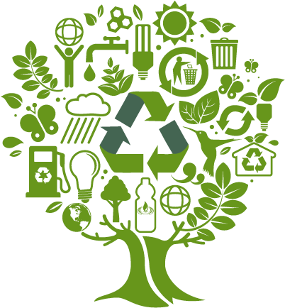
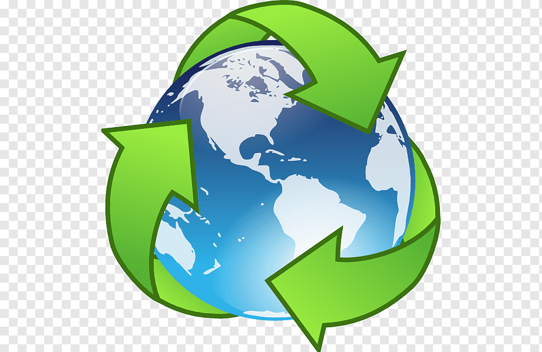

Oportunidades del reciclaje
El reciclaje en Colombia: una oportunidad para reducir la contaminación y crear empleo

Colombia es un país con una gran variedad de recursos naturales, pero también es uno de los mayores productores de residuos en América Latina. Sin embargo, el reciclaje es una oportunidad para reducir la contaminación y crear empleo en el país.
Actualmente, el reciclaje en Colombia es una industria en crecimiento, con una gran variedad de empresas y cooperativas que se dedican a recolectar, procesar y comercializar materiales reciclables. Esto ha generado empleo en las zonas urbanas y rurales, y ha mejorado la calidad de vida de muchas personas.
Sin embargo, todavía queda mucho por hacer. A pesar de los esfuerzos de los gobiernos locales y las empresas privadas, el reciclaje en Colombia todavía representa un porcentaje muy pequeño de los residuos totales generados en el país. Es necesario que se promuevan políticas y programas que fomenten el reciclaje y la reducción de residuos, y se educa a la población sobre la importancia de separar los residuos y reciclar.
El reciclaje de plásticos en Colombia
El reciclaje de plásticos en Colombia: una lucha contra la contaminación del mar

El plástico es uno de los principales problemas ambientales en Colombia y en el mundo. Los residuos plásticos son una amenaza para la fauna marina y causan graves daños a los ecosistemas costeros. Sin embargo, el reciclaje de plásticos es una forma efectiva de combatir esta contaminación.
En Colombia, el reciclaje de plásticos es una industria en desarrollo. Existen varias empresas y cooperativas que se dedican a recolectar, procesar y comercializar plásticos reciclados. Esto ha reducido la cantidad de residuos plásticos en los ríos y en el mar, y ha mejorado la calidad de vida de las personas que dependen de estos ecosistemas.
Sin embargo, todavía queda mucho por hacer. A pesar de los esfuerzos de los gobiernos locales y las empresas privadas, el reciclaje de plásticos en Colombia todavía representa un porcentaje muy pequeño de los residuos totales generados en el país. Es necesario que se promuevan políticas y programas que fomenten el reciclaje y la reducción de residuos plásticos, y se educa a la población sobre la importancia de separar los residuos y reciclar.
El reciclaje en las ciudades colombianas
El reciclaje en las ciudades colombianas: un desafío para mejorar la calidad de vida

Las ciudades colombianas enfrentan un gran desafío en cuanto a la gestión de residuos y el reciclaje. La falta de infraestructura y programas adecuados para recolectar y procesar los residuos, junto con la falta de conciencia y educación sobre el reciclaje, hacen que muchos residuos terminen en vertederos o en los ríos y arroyos, causando graves problemas de salud pública y ambientales.
Sin embargo, hay algunas ciudades colombianas que han empezado a implementar programas y políticas para mejorar la gestión de residuos y el reciclaje. Por ejemplo, en Bogotá se ha implementado un sistema de recolección de residuos seleccionados en el que los residentes pueden separar los residuos orgánicos, reciclables y no reciclables en sus hogares y depositarlos en contenedores específicos. Esto ha mejorado la eficiencia de la recolección de residuos y ha aumentado la tasa de reciclaje en la ciudad.
Sin embargo, todavía hay mucho por hacer. Es necesario que más ciudades colombianas implementen programas y políticas similares, y que se promueva la educación y conciencia sobre el reciclaje entre la población. Además, es importante que se invierta en infraestructura y tecnologías adecuadas para el reciclaje y la gestión de residuos, para mejorar la calidad de vida de los residentes de las ciudades colombianas.